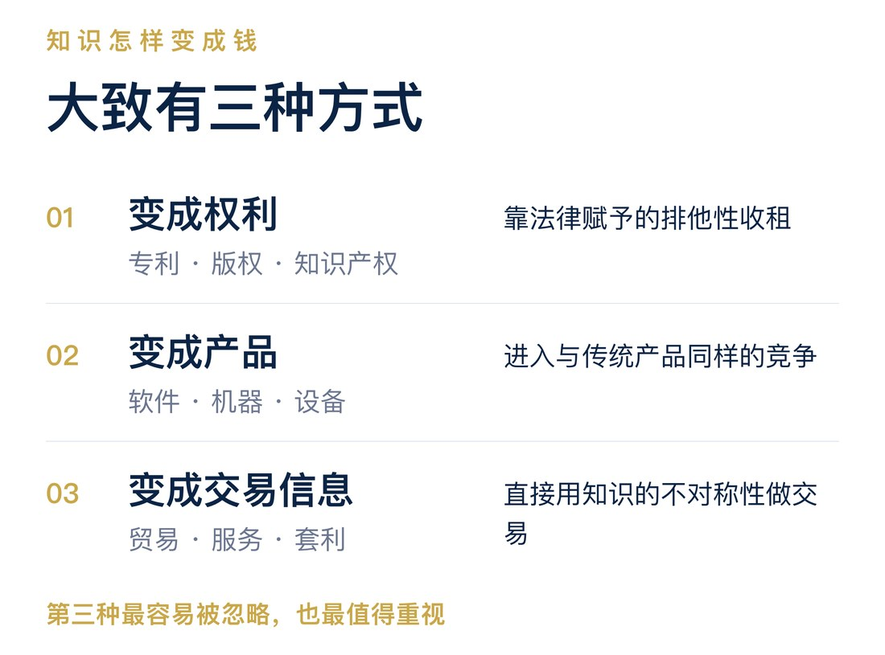
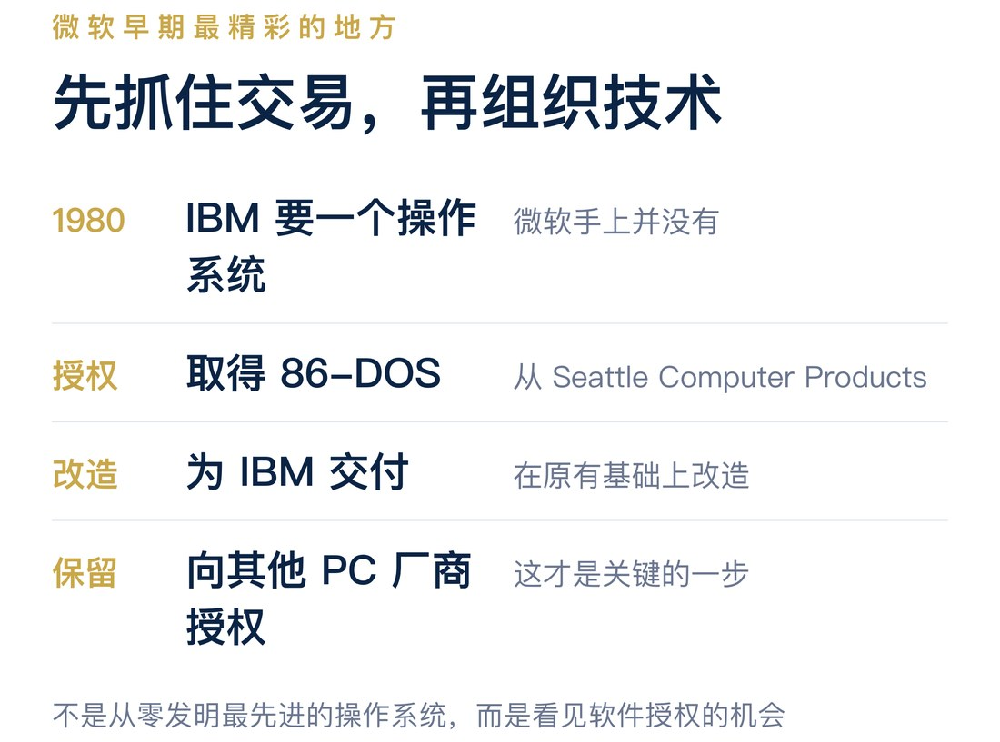
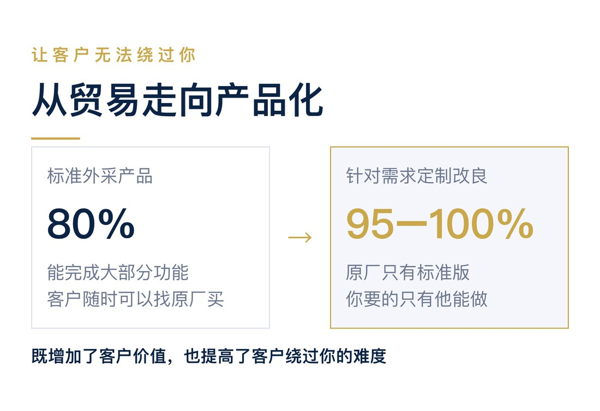
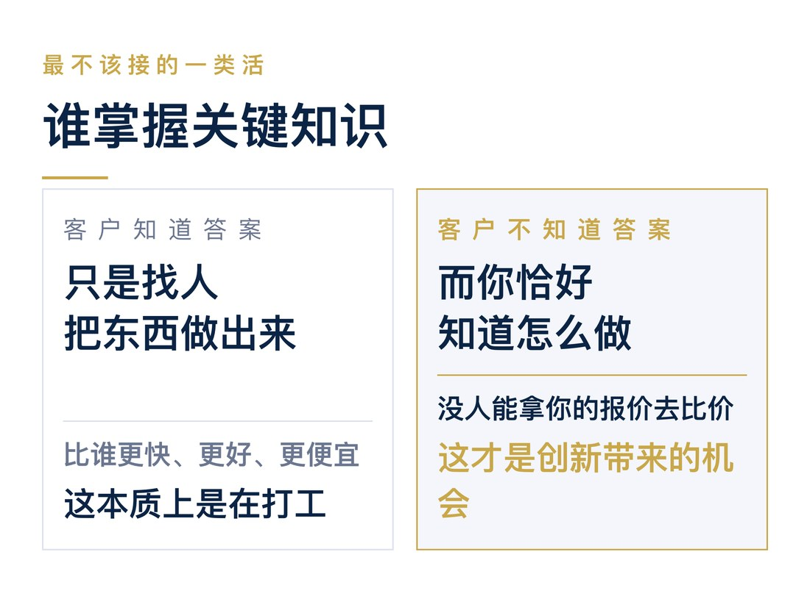

英语中有一句著名的话：Knowledge is power.
我们通常把它翻译成"知识就是力量"，认为知识是一种生产力。掌握了知识，就能够把事情做得更好、更快、更省。
但我觉得，这句话也可以从另一个角度理解。
知识就是权力。
知识不仅让你拥有解决问题的能力，还可能赋予你某种别人没有的特权。
别人不知道，而你知道；别人做不到，而你做得到。
这种不对称性，就赋予了你某种特殊的商业地位。
科学家喜欢用知识发现世界的规律，工程师喜欢用知识改进产品，而生意人则懂得利用知识所带来的优势获利。
科技创业者需要学会的，不只是把知识转化为生产力，更是把知识转化为商业权力。
这才是我理解的科技创业。
◇ ◇ ◇
一、科技创业者为什么不会做生意？
科技企业的创始人，大多具有工程师或者科学家的背景。
在创业之前，他们生活在一个理性、数字化的世界里。
科学家每天追求的是发现世界的规律，解决未知的问题；工程师则希望通过自己的方案，让事情做得更快、更好、更省。
他们习惯用数据判断优劣，用实验验证对错，用技术成果证明自己的能力。
这当然是一种很好的职业习惯。
但问题在于，当这些科学家和工程师开始创业、开始做生意时，往往仍然试图用同样的思维方式证明自己。
很多科技创业者认为，只要证明自己的技术更先进、方案更优秀，客户自然就会接受。
于是，他们向客户介绍技术原理、性能指标、实验结果，努力证明自己的方案为什么更好。
与其说是在销售（Sales），不如说是在开一场项目验收会，或者技术评审会。
他们相信，只要通过了技术评审，生意自然就能成交。
但商业世界不是科学世界。
科学研究需要证明自己是对的，做生意却需要让交易发生。
少数创业者后来逐渐理解了客户价值，开始学会从客户的角度讲故事。
例如，不再向客户解释发动机的效率提高了多少，而是直接告诉客户：
"使用我们的方案，您每年可以省下多少油钱。"
这当然好了很多。
但我认为，这样仍然存在一个问题。
你把问题说清楚了，也把自己的价值锁死了。
当你告诉客户，你的方案每年能节省一万元油钱时，客户自然会围绕这一万元来判断你的价格。
你的技术价值变成了一个可以计算、可以比较的数字。客户也就可以拿着这个数字去比较其他供应商。
你从证明技术先进，变成了证明性价比更高。
但本质上，你仍然是在竞争。
在我看来，这是一种竞争主义的思维。
你是在一个已经被定义好的市场里，证明自己比别人更好。
◇ ◇ ◇
二、科学家创业，真的那么糟糕吗？
还有一种科学家式的创业思维，经常受到批评。
"我要改变世界。"
"我要创造一种前所未有的技术。"
"我要颠覆整个行业。"
很多人认为，科学家创业最大的问题就是不接地气。他们喜欢谈理想、谈未来、谈改变世界，却不知道客户真正需要什么。
但我反而认为，这种思维比单纯强调技术性能或者成本优势的创业思维好得多。
为什么？
因为科学家有两个非常重要的优点。
第一个优点，是卖梦想，而不是卖性能。
当一个工程师告诉客户，他的方案比竞争对手快20%、便宜==30%=时，他实际上已经把自己的价值锁定在一个可以比较的范围内。
客户会计算，这20%的性能提升究竟值多少钱，然后再去找其他供应商比较价格。
但当一个科学家说，他希望实现一件过去从来做不到的事情时，他实际上打开了一个全新的价值空间。
因为梦想的价值，往往没有办法用现有的产品价格和性能指标来衡量。
梦想的好处，是没有把价值提前锁死。
科学家的第二个优点，我认为更加重要。
他们喜欢思考问题，而不是仅仅证明方案的合理性。
工程师往往习惯在一个已经定义好的问题中寻找最优解。
这个方案是否合理？成本是否最低？技术是否可行？性能能否达到要求？
而科学家往往更愿意追问：
为什么一定要这样做？
有没有可能从根本上改变这件事情？
有没有一个别人还没有想到的问题？
这是一种非常有价值的能力。
因为创业最重要的事情之一，恰恰是找到一个真正有价值的问题。
所以，我并不认为科学家"改变世界"的想法有什么不好。
他们至少保留了两个非常重要的创业优势：
一是敢于想象尚未实现的梦想，二是愿意思考尚未解决的问题。
唯一的问题是：客户不 care。
客户并不关心你是不是想改变世界。
他没有义务为你的理想付钱。
所以，科学家创业真正需要改变的，不是放弃梦想，而是改变梦想的主人。
不要卖自己的梦想，要卖客户的梦想。
客户有一件非常想做、却一直做不到的事情。
你恰好知道如何做到。
这才是科技创业真正有价值的商业机会。
你卖给客户的应该是他梦想实现的可能性，而不是你的技术原理、方案的合理性，或者某个性能指标。
客户需要的是结果，不是一次科学报告。
◇ ◇ ◇
三、知识究竟应该怎样变成钱？
在我看来，做买卖的方式其实很简单。
除了依靠权力收租，再就是资源交换和利用信息差。
科技企业拥有的核心资源是知识。
所以，科技企业的商业模式，本质上就是如何把知识转化为可以获利的东西。
大致有三种方式。

第一种，把知识变成权利。
典型的例子就是版权、专利和其他知识产权。
通过法律赋予知识某种排他性，企业可以依靠这种排他性获得收益。
第二种，把知识变成产品。
把知识转化为软件、机器、设备或者某种技术产品，然后在市场上出售。
这是大多数科技企业最熟悉的商业模式。
第三种，把知识变成交易信息。
也就是贸易和服务。
你知道别人不知道的事情，知道别人不知道的方法，知道怎样用更低的成本获得别人需要的结果。
然后利用这种知识优势进行交易。
我认为，第三种方式恰恰是科技创业者最容易忽略，也最值得重视的。
为什么？
因为前两种方式，实际上都让知识进入了与传统产品类似的竞争。
你的专利要与其他技术竞争，你的产品要与其他产品竞争。
你需要开发、生产、销售，还需要不断证明自己的东西比别人的更好。
而第三种方式不同。
它直接利用知识的不对称性创造交易机会。
知识最好的商业模式，可能不是产品化，而是交易套利。
尤其是在创业早期。
◇ ◇ ◇
四、套利才是知识最核心的商业优势
什么是套利？
简单说，就是一毛钱的东西，一块钱卖给客户。
例如，一个客户有一个难题。
他愿意花十块钱解决，却一直没有找到办法。
而你恰好知道，一毛钱就可以做到。
于是，你花一毛钱买来，一块钱卖给客户。
客户很高兴，因为他原本愿意花十块钱。
你也很高兴，因为你赚取了巨大的价差。
这就是知识的价值。
这里的套利，并不完全是金融市场上严格意义的无风险套利，而是利用知识、信息和能力的不对称，发现别人看不到的交易机会。
微软早期的发展，在我看来就很能说明这种思路。
1980年，IBM正在开发个人计算机，需要一个操作系统。
微软当时并没有现成的操作系统。
如果按照传统工程师的思维，微软应该立即组织团队，从头开发一个先进的操作系统。
但微软采取了另一种方式。
它从Seattle Computer Products取得86-DOS的授权，后来购买了相关权利，并在此基础上进行改造，为IBM提供操作系统。
更重要的是，微软保留了向其他PC制造商授权软件的商业空间。
微软最重要的商业洞察，不是如何从零发明一个最先进的操作系统，而是认识到操作系统的商业价值，以及软件授权所带来的巨大机会。
当然，微软后来投入了大量研发，逐步建立起庞大的软件产品体系。
但它早期最精彩的地方，是先抓住了交易机会，再组织技术资源完成交付。

客户需要什么，你就利用自己掌握的知识，以尽可能低的成本提供什么。
你越擅长利用知识套利，就越容易获得利润，也越容易获得现金流。
这对创业早期的科技企业尤其重要。
因为这个阶段，公司首先需要的是活下来，而不是证明自己的产品有多完美。
◇ ◇ ◇
五、一个理想的科技创业交易
我认为，一个很好的科技创业合作，可以是这样的。
客户有一个难题。
他愿意花一万元解决，但一直没有解决。
你恰好知道，利用一种最新的技术方法，可能只需要十块钱就能完成。
于是，你找到客户，说：
"这个问题我可以帮你试一下。五千块钱，你愿不愿意？"
客户想了一下。
原来一万元都解决不了，现在只要五千元，值得尝试。
于是他答应了。
你接着说：
"那你先付三千元定金。我试一下。毕竟是新技术，不敢保证一定成功。如果最后做不成，我退给你两千元。"
于是，双方开始合作。
如果成功了，客户用五千元解决了一个原本一万元都解决不了的问题。
而你可能只花费了十元的直接技术成本，就获得了可观的收入。
如果失败了，你退还两千元，但保留一千元作为尝试的费用，用来分担试验成本。

当然，实际成本不只有十元，也可能包含人工、时间和试验费用。双方也需要事先约定清楚交付内容、风险与退款条件。
但这些并不改变这笔交易的本质。
客户为实现自己的梦想付费，而创业者利用知识优势，以很低的成本尝试实现它。
许多人可能认为，这样做生意不现实。
科技企业怎么能还没有把产品做好，就先去找客户收钱？
但我认为，高科技企业的创业，恰恰就应该尝试从这样的交易开始。
因为你真正的优势不是拥有一个成熟的产品，而是知道一种别人尚不知道的解决问题的方法。
如果等到你把产品全部开发完成，再去市场上销售，你很可能已经失去了知识所带来的部分独特优势。
别人可能已经掌握了同样的技术，市场也可能出现了大量竞争者。
原本的知识套利机会，最终变成了普通的产品竞争。
◇ ◇ ◇
六、从贸易到产品：让客户无法轻易绕过你
当然，如果你只是简单地买来卖去，也会遇到一个问题。
客户可能很快就发现，你卖给他的东西其实是从别的地方采购来的。
那么，下次他为什么还要找你？
他完全可以绕过你，直接向供应商购买。
你的套利机会就消失了。
所以，你需要开始建立自己的产品。
最简单的办法，就是采购现有产品，贴上自己的品牌，以自己的产品和服务向客户销售。
这样，客户首先认识的是你的产品，而不是背后的供应商。
你不一定需要从头开发技术，也不一定需要拥有自己的工厂。
但它能够帮助你建立独立的产品身份和销售渠道。
当然，贴牌本身并不能保证客户不会找到原始供应商。如果客户能够轻易采购同样的产品，你仍然没有多少壁垒。
所以，更进一步的方法，就是针对客户的具体需求，对标准化的外采产品进行定制改良。
例如，市场上有一种标准设备，能够完成客户需要的大部分功能，但并不完全符合他的使用要求。
你采购这款设备，针对客户的需求，修改接口、调整结构、增加功能，或者改善某个性能。
这样一来，你做了两件事情。
第一，你更好地满足了客户的需求。
原本的标准产品只能解决客户80%的问题，现在经过你的改良，可以解决95%，甚至100%。
客户自然更愿意购买。
第二，你切断了客户直接采购标准产品来替代你的可能性。
客户即使找到了原始供应商，也只能买到未经改良的标准产品。
而他真正需要的，是你定制后的版本。
这样，你就从一个可以被随时绕过的贸易商，变成了一个拥有独特产品的供应商。
当然，这里真正的壁垒不是隐藏产品来源，而是你的改良确实创造了客户需要、又不容易从其他地方获得的价值。
定制既增加了客户价值，也提高了客户绕过你的难度。
这就是从贸易走向产品化的重要一步。

而且，你未必需要投入大量研发。
有时候，只需要一个很小的改良，就能够形成有效的产品差异。
关键并不在于技术有多复杂，而在于这个改良是否能够保护你原有的交易优势。
◇ ◇ ◇
七、研发是为了什么？
假如客户开始研究你的产品，竞争对手也开始模仿你的设计。
原本的定制改良，可能很快就被别人学会。
怎么办？
那就需要继续研发。
你可以改进产品结构，开发新的软件模块，优化算法，积累专有工艺，或者建立更复杂的技术系统。
随着研发不断深入，别人复制你的产品就会越来越困难。
这就是我认为研发真正应该承担的商业任务。
研发不是为了技术先进而研发，而是为了不断加深企业独有的知识和能力优势。
一开始，你可能只是做贸易。
后来，你有了自己的品牌。
再后来，你开始定制产品。
然后，你建立自己的研发能力。
最后，你可能形成专有算法、复杂工艺、知识产权和完整的技术体系。
随着这个过程的发展，你的商业壁垒也越来越强。

但整个过程的目标其实没有改变。
仍然是利用知识与能力的不对称，获得别人无法轻易获得的利润。
产品和研发，并不是两个独立于商业活动之外的目标。
它们是不断强化套利能力的手段。
这里需要特别强调一个问题：
技术不是为了比别人更好，而是为了让别人更难获得与你相同的商业优势。
当然，提高性能、降低成本可以帮助企业创造优势。
但技术性能本身不应该成为最终目标。
例如，一家企业通过大量研发，把某个技术指标从90分提高到95分。
听起来是一个不错的成果。
但如果客户根本不需要这5分，竞争对手也很容易做到，那么它可能并没有创造多少商业价值。
而另一家企业，只是通过一个简单的技术改良，让某种过去无法完成的操作变得可行。
虽然技术改进看起来并不惊人，却可能帮助企业获得一个别人难以进入的市场。
这才是有商业意义的研发。
荷兰ASML的发展就可以从这个角度理解。
ASML最初利用飞利浦等企业已有的技术成果进入光刻设备市场，后来通过持续研发、系统集成和供应商合作，逐渐形成了极难复制的技术能力。
今天，ASML的壁垒并不是某一个单独的技术秘密，而是复杂设备、专业供应商、制造经验、技术人才和长期研发积累共同形成的体系。
竞争对手即使知道它的大部分技术原理，也很难在短期内复制相同的能力。
这说明，随着企业发展，最初简单的信息差，可以逐步转化为更加持久的技术和能力差。
贸易利用信息差，产品保护交易优势，研发加深技术壁垒。
但这些都只是手段。
核心仍然是保持一种别人难以复制的获利能力。
◇ ◇ ◇
八、最不应该做的，是客户已经知道怎么做的项目
按照这样的思路，科技企业最应该避免什么样的业务？
我认为，就是那种客户已经完全理解的问题。
客户知道自己要什么。
知道技术原理。
知道这件事能够实现。
甚至知道应该用什么方法。
他只是需要找一个人，把东西做出来。
于是，他找到你。
你根据他的要求设计、开发、交付。
看起来，这也是科技企业的业务。
有合同，有收入，也有技术开发。
但我认为，这种业务有一个根本的问题。
你没有知识优势。
客户已经知道要做什么，也知道怎么做。
他只是没有时间，没有人员，或者不愿意自己动手。
那么，你与其他供应商之间的区别是什么？
无非就是谁做得更快，谁做得更好，谁的价格更低。
客户可以找你，也可以找别人。
只要市场上有足够多的人能够完成这项工作，你的利润就会受到竞争的限制。
你可能拥有很好的工程能力，也可能获得稳定的收入。
但从我所讨论的知识套利角度来看，这不是最理想的科技创业。
这本质上是在打工。
只不过，普通员工按月领取工资，而你以公司的形式承接项目，按合同收取费用。

当然，工程外包和技术服务也可以成为很好的生意，优秀的执行能力、信誉和组织效率同样能形成壁垒。
但那是另一套商业逻辑。
如果你的目标是利用创新获得超额利润，那么最不应该做的，就是把自己变成一个客户随时可以替换的技术执行者。
客户知道答案，只是找你来做，那是打工。
客户不知道答案，而你知道，那才可能是创新带来的商业机会。
两者最大的区别，不是你做了多少技术工作，而是谁掌握了关键知识。
◇ ◇ ◇
九、科技创业最难的，不是把东西做好
按照这样的思路，科技创业最难的事情是什么？
不是技术研发。
也不是把产品做得足够完美。
甚至不是证明你的技术比别人先进。
最难的是找到那个有价值的问题，找到真正愿意付钱解决问题的客户。
一个客户愿意为解决问题支付一万元，而你知道一种只需要十元的方法。
这就是一个可能具有巨大商业价值的机会。
但如果没有那个愿意支付一万元的客户，你的十元技术再先进，也只是一个技术。
很多科学家和工程师会把大量时间投入技术开发，因为这是他们熟悉而且擅长的事情。
他们喜欢解决技术难题，也习惯通过完成一个漂亮的系统来证明自己。
但对于科技创业来说，技术难题未必就是商业难题。
你能不能找到那个愿意付钱的人？
能不能发现他真正想实现什么？
能不能找到一种别人不知道的低成本方法？
又能不能设计一笔让双方都愿意参与的交易？
这些问题，可能比你能不能亲自把产品做好重要得多。
这也意味着，科技创业者需要重新理解自己的工作。
你不是一个等待项目验收的工程师。
也不是一个需要向世界证明自己理论正确的科学家。
你首先是一个利用知识优势寻找交易机会的人。
至于产品开发、技术研发、团队建设，都是为这个目标服务的。
科学家的思维在这个过程中仍然非常重要。
因为他善于发现问题，善于想象尚未实现的可能性。
但他必须把这种能力用在客户身上。
科学家负责发现可能性，生意人负责找到愿意为这种可能性付钱的人。
一个好的科技创业者，需要同时拥有这两种能力。
◇ ◇ ◇
十、创业时，首先把自己当成一个生意人
说到底，我认为科技创业者首先应该完成一个身份转换。
创业时，要把自己当成一个生意人，而不是科学家或者工程师。
你和那些低买高卖、靠赚取差价为生的商人，甚至那些被人称为"奸商"的人，在商业逻辑上并没有本质区别。
你们都在寻找交易机会，都希望用尽可能低的成本获得尽可能高的收入。
唯一的区别，是你们使用的武器不同。
传统商人可能依靠资金、渠道、货源、人脉或者信息差。
而科技创业者依靠的是科学、技术和知识。
传统商人知道某个地方的东西便宜，另一个地方的东西贵，于是把东西从一个地方运到另一个地方。
科技创业者知道某个问题，别人需要花一万元也解决不了，而自己掌握的新技术，只需要十元就能解决。
从商业逻辑上看，这两件事情没有本质区别。
你不是因为技术先进而赚钱，而是因为技术让你拥有了别人没有的交易优势。
科学家的目标是发现真理。
工程师的目标是把事情做好。
而生意人的目标，是找到有利可图的交易。
科技创业者当然需要科学精神和工程能力，但这些应该成为他做生意的工具，而不是创业的目的。
如果你把技术本身当成目的，就会不断追求更先进的算法、更漂亮的性能指标、更完善的产品。
如果你把交易当成目的，你就会首先去寻找那个愿意付钱的客户，再决定需要使用什么技术。
这两种思路，可能导致完全不同的创业路径。
一种是先拥有技术，再努力寻找它的用途。
另一种是先发现交易机会，再利用技术完成交易。
我认为，尤其在创业早期，后一种方式可能更加有效。
它不仅更容易产生收入和现金流，也能避免创业者花费大量时间和资金，去开发一个虽然先进，却没有人愿意付钱的产品。
而且，当公司逐渐发展起来以后，你仍然应该保持这种思维。
需要产品的时候，就建立自己的产品。
需要技术改良的时候，就进行研发。
需要专利的时候，就申请专利。
需要形成标准、平台或者生态系统的时候，再去建设这些东西。
但所有这些，都是为了维持和扩大你的交易优势。
商业是目的，技术是武器，产品和研发是手段。
不要把顺序颠倒过来。
◇ ◇ ◇
结语：卖客户的梦想，赚知识的钱
我并不反对科学家创业。
相反，我认为科学家的思维有非常重要的优势。
他们敢于想象尚未实现的梦想，也愿意思考别人没有注意到的问题。
这恰恰是创新最重要的起点。
但创业与科学研究终究不是一回事。
科学家可以为了自己的梦想投入毕生精力。
创业者却必须找到愿意为梦想付钱的客户。
所以，科技创业者不必放弃科学家的想象力，但必须学会用生意人的方式实现它。
不要只证明自己的技术比别人更先进。
不要把全部精力放在现有产品的性能竞争上。
也不要以为，把一个复杂的技术系统开发完成，就等于创造了一家成功的科技企业。
先找到一个客户愿意付钱的问题，再利用别人不知道的方法，以尽可能低的成本解决它。
这才是知识套利的起点。
然后，你可以利用获得的利润和现金流，逐渐建立自己的产品，通过定制改良形成差异，再通过持续研发加深壁垒。
企业可以从简单的贸易开始，最后发展出非常复杂的技术体系。
但无论商业模式怎样发展，都不要忘记最初的逻辑：
技术创造不对称，交易实现价值，产品和研发保护这种优势。
如果客户已经知道怎么做，只是找你来完成，那么你本质上是在出售劳动。
如果客户有一个非常想实现、却不知道如何实现的梦想，而你恰好掌握了别人不知道的方法，那么你就可能拥有真正的创业机会。
创业时，首先把自己当成一个生意人。
你和普通商人没有本质区别，不过是使用的武器不同。
别人用资本、渠道和信息差套利。
你用科学、技术和知识套利。
回到文章开头的那句话：
Knowledge is power.
知识不仅是一种生产力，也是一种权力。
它赋予你的，不只是做成一件事情的能力，更是别人无法轻易取代你的商业地位。
卖客户的梦想，赚知识的钱。
研发是手段，产品是壁垒，套利才是核心。
这才是我理解的科技创业。